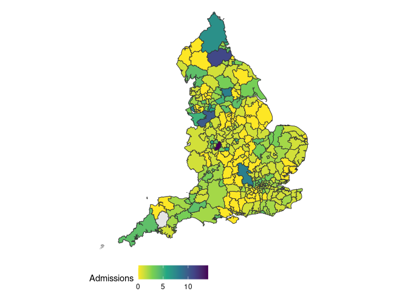

This package contains a many-to-many mapping between local authority districts and NHS Acute Trusts in England; details of this mapping (including a summary of the methods and a quick-start guide) can be found in vignettes/mapping-summary.
This package also has functionality to download trust-level hospital admissions data, published weekly on the NHS COVID-19 Hospital Activity webpage. Data published on date YYYY-MM-DD can be downloaded using the function get_admissions(release_date = "YYYY-MM-DD"). This function can also be used to return estimated admissions by upper-tier and lower-tier local authorities. See the quick start below, the vignettes, and the package documentation for more.
Installation
Install the stable development version of the package using {drat}:
install.packages("drat")
drat:::add("epiforecasts")
install.packages("covid19.nhs.data")Install the unstable development version of the package with:
remotes::install_github("epiforecasts/covid19.nhs.data")Quick start
Load the package.
Download the latest admissions mapped to lower-tier local authority (LTLA) using the default mapping. Note: This data is updated weekly each Thursday and the mapping is a probabilistic estimate.
adm <- get_admissions("ltla")Map the latest available estimates by LTLA using one of the built in package shapefiles.
map_admissions(adm, england_ltla_shape)
Plot the time series of estimated admissions in an example LTLA (here Derby).
library(ggplot2)
library(dplyr)
#>
#> Attaching package: 'dplyr'
#> The following objects are masked from 'package:stats':
#>
#> filter, lag
#> The following objects are masked from 'package:base':
#>
#> intersect, setdiff, setequal, union
adm %>%
filter(geo_name %in% "Derby") %>%
ggplot(aes(x = date, y = admissions)) +
geom_col(width = 0.9, col = "grey50", fill = "grey85") +
theme_minimal() +
labs(x = "Date", y = "Daily Hospital Admissions",
title = "Covid-19 Admissions in Derby",
subtitle = "Estimated using a probalistic mapping from NHS Trusts to lower-tier local authority level")